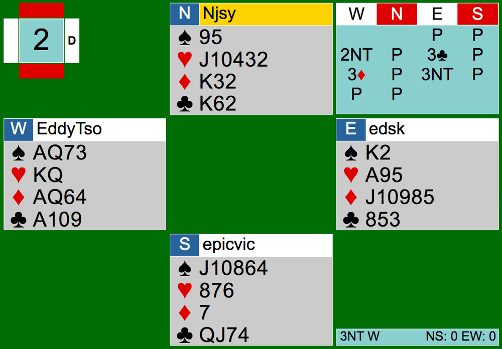
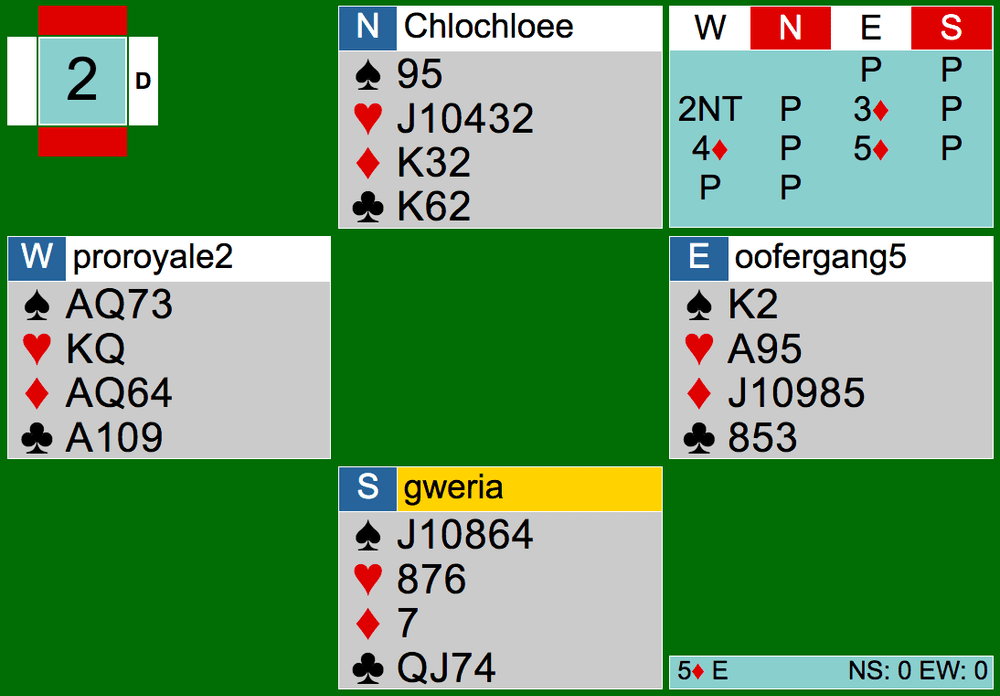

Welcome back to another CK team game article! Today we’ll be mainly focusing on Board 2’s bidding from August 4th’s Cardology team game. Here is the link to the hands: August 4th CK Team Game


As shown above, both West players opened 2NT. At Table 1, East responds with 3C, which looking at the hand, I’m not sure what it means (they don’t play puppet). It looks like East may have thought that clubs were a transfer to diamonds. However West interpreted 3C, W bid 3D and East set the final contract in 3NT. They got to the right place, but you can say that the bidding to get there was a bit… sketchy.
At Table 2, you can say the bidding was a bit unconventional as well. East naturally bid 3D over the 2NT overcall and eventually made their way to 5D by East.
Most players play systems on after 2NT openings. You may ask, “What does systems on mean?” It means bids including Stayman and transfers are still “on.” For example, the 3D bid at Table 2 should have been a transfer to hearts. West should have bid 3H after 3D.. At Table 1, the 3C bid should have been Stayman. The same systems are played over a 2NT opening as a 1NT opening.
standard stayman
As a review, let’s go over a few possible bids over a NT. For one, there’s Stayman. Over 1NT, Stayman would be 2C, and over 2NT, Stayman would be 3C. Standard Stayman asks for the NT opener for a four-card major. If the opener bid 2H after the 2C bid (or 3H after the 3C bid), that would mean that the person who bid Stayman has a four card major and now the opener is showing 4 hearts. The opener can also respond to the Stayman bid with 2D (or 3D), denying a four card major. Here are some possible bidding sequences (opponents pass throughout):
1NT-2C*-2D**-2NT***-3NT****
2NT-3C^-3S^^-4S^^^
*Standard Stayman: 8+ points, asking if partner has 4 card major, holding 4 card major(s) themselves
**2D: denying 4 card major
***2NT: 8-9 points, inviting to 3NT if partner has maximum of 15-17 HCP range
****3NT: opener accepts invite, has good 16-17 points (top of 15-17 point range)
^3C: Standard Stayman: 3+ points, asking if partner has 4 card major, holding 4 card major(s) themselves
^^3S: showing 4 spades
^^^4S: the Stayman bidder has 4 spades for a total of 8 trumps together, around 5+ points
Jacoby transfer
You may also be familiar with the Jacoby transfer. The transfer can be bid on the next level after the NT call. It commands the NT opener to bid the next higher suit to ensure that the NT opener’s strong hand is not revealed to the opponents. Right now, we are only going to learn the major transfers. To make a transfer, the responder must have 5 of the major. Bidding 2D (3D) over 1NT (2NT) shows 5+ hearts and 0+ points. Opener will bid 2H after this call and go from there. Here is one example of a bidding sequence with Jacoby transfers (opponents pass throughout):
1NT-2H*-2S**-2NT***-4S****
*2H: 0+ points, 5+ spades
**2S: bidding spades for partner regardless of opener’s spades
***2NT: showing an invitation hand of 8-9 points, asking partner to choose between spades or NT
****4S: showing maximum of 15-17 range, 3+ spade support
Here in Board 2, East cannot make a standard Stayman call nor a transfer. East shouldn’t pass also because East should know that they have game (25+ points together). East should skip showing the 5-card diamond suit and bid 3NT, as the hand is fairly balanced anyways.